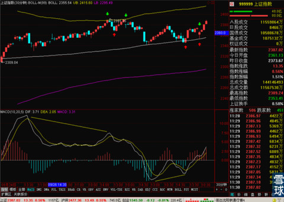
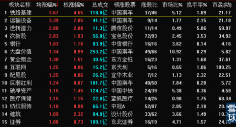
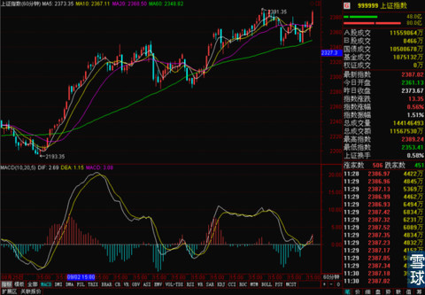
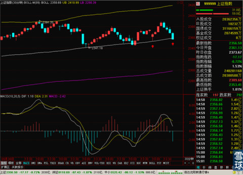
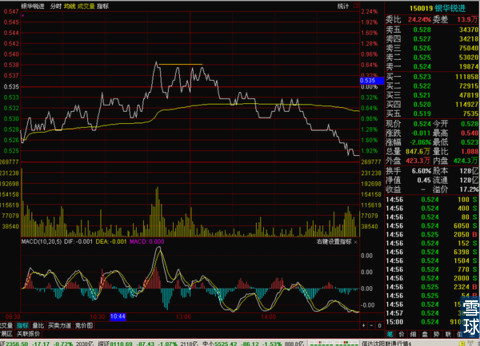

今天早上一起床，我一看财经新闻，昨天欧洲和标普跌成那个样子，加上报出来的9月份经济数据。我就有点小紧张，估计今天低开是跑不了了。结果一开盘不仅是低开，而且是严重的低开。15分钟线都不用看了，这一低开，15分钟线BOLL中轨肯定是保不住了。直接去看的30分钟线。

等看到指数下跌到30分钟线BOLL中轨止住并回升的时候，我就高兴了。不仅高兴还稍稍加了一点银华锐进的仓。成交价格是0.528 。
之所以昨天判断会上涨，今天外盘和数据不利的情况下，真就急拉1%以上，中午收盘之前就涨回来。真的只是偶然想象么？
其实不是，大家可以仔细去看上面那张30分钟线的截图，为什么第二个绿箭头的低开我就清仓走人了，现在这个低开反而加了一点点仓位。原因很好理解，前一个低开是在30分钟出现顶背离，上方有上轨做压力的情况下出现的，跑掉才安全。后一个低开是在30分钟线出现底背离之后出现的，而且很好在相应的支撑位企稳，那么买一点危险也不大，甚至还能节约点成本。
看看今天的板块就比较有意思了，

铁路基建是受和俄罗斯大合同的刺激上涨的，这个没有什么奇怪的。
但是银行早盘先跌后涨，券商持续上涨就有点意思了。因为同时前期上涨比较多的阿里概念啊，央企改革概念啊都在下跌，那么现在很可能是市场主力在切换热点，把一部分获利盘兑现，向其它板块进行布局的过程。金融类的权重股是在掩护这个调仓的动作。同时外盘不利的局面也可能影响前期暴涨过的股票，市场主力想配置一点点破净的安全股票的需要也不排除。
总之在目前这段时间里，大盘暂时是安全的。只要30分钟线和60分钟线不走坏。日线级别不会突然爆发诡异的大跌，周末之前都有点上涨空间。

早上的低开就够刺激了，下午这下实在是更刺激。
一天内低开高走再大幅回落，一天内两次拍在30分钟BOLL中轨上。

说实话，以我的想象力实在是猜不到下午走这样，而且现在也没太明白市场主力这么做的逻辑是什么？
可以知道的一点是明天是本月的股指交割日，我在之前也讲过几次，今年的特点是交割日这个周五一般不会下跌，下跌都是出现在周四。但是上午的拉升和各分时的向好让我觉得今天可能不会黑了，顶多是下午先横盘后小幅回落。但是实际情况和预测的出入比较大。
但是鉴于上证指数停在了30分钟BOLL中轨附近，股指期货也在尾盘拉起，在60分钟线BOLL中轨附近企稳。那么我还是维持对明天行情的谨慎乐观态度吧。只要今天晚上外盘不出现暴跌导致上证指数大幅低开，本周周线还有希望收个红色的假阳线。
中午看电影看过点了，错过了今天最好的卖出银华锐进的时间，

连续四次出现0.538这个价格，而且MACD有点顶背离，大盘在下午开盘之后就有下跌。最后这个0.538的价位是今天最好也是最容易判断出来的一个机会。结果最后0.536的价位上把昨天买入的银华锐进卖了，今天上午新的加的这部分亏损了不到1%，估计明天应该能走得了，因为周线上0.529这个位置一旦有机会应该会被拿回来。
从下午1点开盘到1点20之间就20分钟不到的时间，就是一个超短线扭转的关键时间段，幸好看完电影的时间还早，再晚一会昨天买入的也会被留下。所以说超短线真的是必须要盯盘，一会都不能疏忽的，大多数上班不能随时盯盘的小伙伴们，还是尽量少做超短线吧。
今天下午下跌的真实原因一定不是像网站上鬼扯的那些理由那样，具体是因为什么我现在还没有相通，想好了明天中午写一下吧。这样比较极端的走势也是有一定研究和思考价值的。
 |
今天早上一起床，我一看财经新闻，SaiLv 2014-10-16 11:55:18 |
Copyright © 1996-2014 SINA Corporation All Rights Reserved.